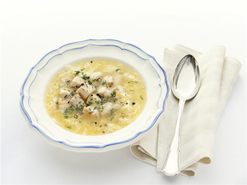

9 Porties
30 minuten bereidingstijd , 15 minuten wachttijd
71 kcal per portie
Franse kippensoep komt uit Parijs en is bereid uit verse kippenvlees en speciaal verzonnen door franse koks.

1 pot MAGGI Basis voor Soep Kip
1 sjalot, gesnipperd
1 teen knoflook, fijngehakt
1,5 liter water
1 citroen
150 gram kipfilet, in blokjes
2 eieren
20 gram boter
1 eetlepel dille (gedroogd)
Fruit de sjalot en de knoflook Fruit in een ruime soeppan de sjalot en knoflook gedurende 4 minuten in de olijfolie. Voeg de soep en het water toe. Voeg twee repen citroenschil toe.
Voeg de kipfilet toe Voeg de kipfilet toe. Laat alles 15 minuten zachtjes koken. Breng de soep op smaak met een beetje citroensap.
Voeg de eieren toe Klop de eieren met een beetje water los in een kommetje, giet in een dun straaltje bij de kokende soep en roer met een vork tot het ei stolt in dunne sliertjes.
Serveer het gerecht Verdeel de soep over diepe borden en garneer met de dille. Maak er met een rijk gevulde salade en brood een complete maaltijd van.